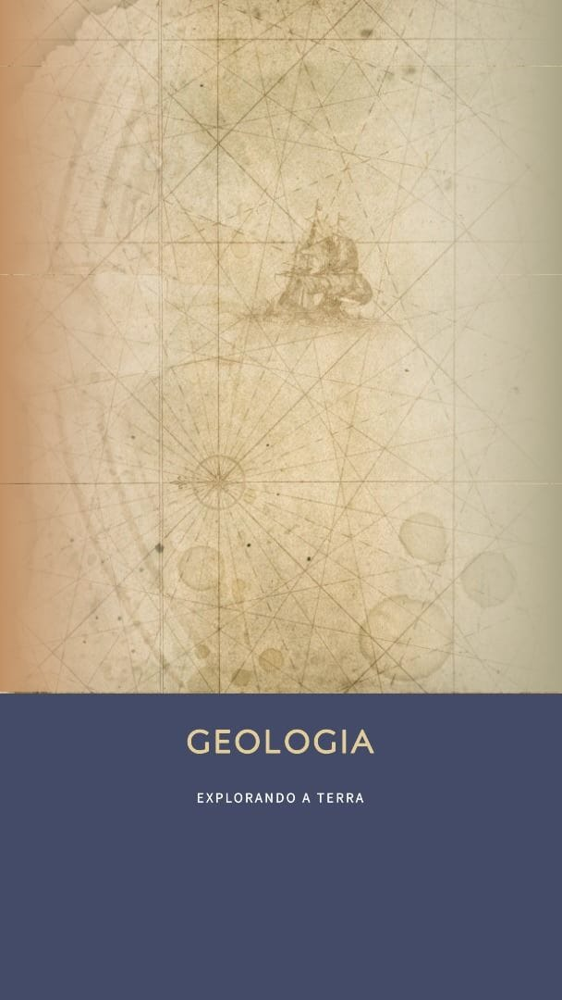

|  |
Quem é?O geólogo é o profissional que analisa e estuda a composição terrestre. Em outras palavras, o especialista da área realiza exames relacionados, majoritariamente, à camada litosférica da terra, compreendendo os diferentes tipos de solo, rochas, minerais e características intrínsecas à superfície. Por meio da análise do profissional, outros setores podem ser favorecidos, como da mineração, petróleo, hidrografia e, até mesmo, da engenharia. O termo "geologia" resulta na junção das palavras gregas: geo (terra) e logia (razão), se referindo ao campo de estudos do profissional. Vale ressaltar que, além das características já mencionadas, o geólogo também é responsável por ler a história da terra cravada nas rochas da crosta terrestre, datando superfícies, catalogando o solo e verificando as diferentes características de cada formação da litosfera. De acordo com a Classificação Brasileira de Ocupações, o profissional da área da Geologia é responsável, entre outras possibilidades, por:
A área da Geologia também compreende os estudos de montanhas, rios, oceanos, vulcões, meio ambiente e demais fatores litosféricos e suas interações com a vida. |